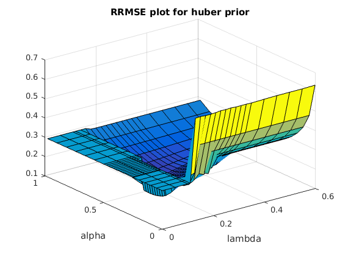
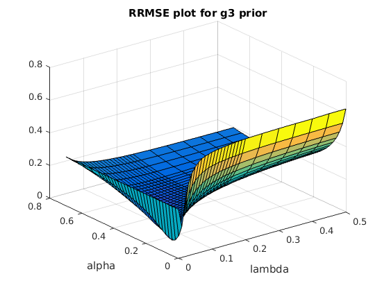
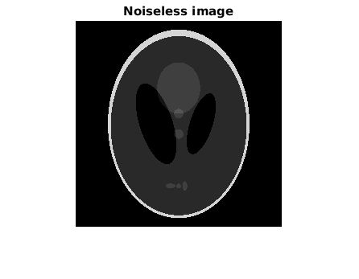
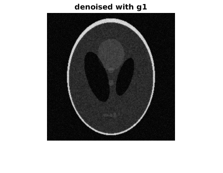
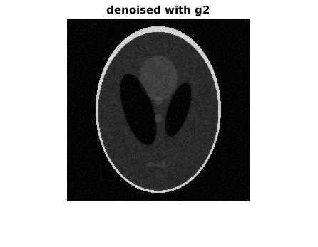
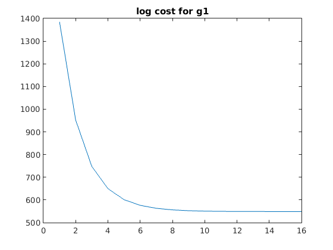
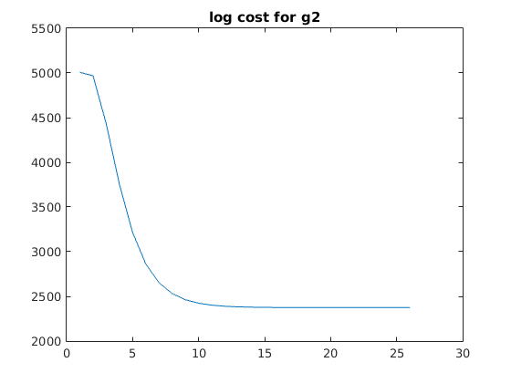
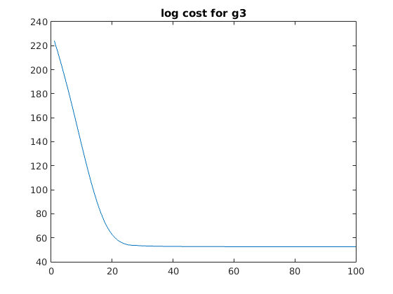

Contents
Loading the data
load('../data/assignmentImageDenoisingPhantom.mat');
A) RRSME of given noisy image
noiselessNorm = sqrt(sumsqr(abs(imageNoiseless)));
initialRRMSE = sqrt(sumsqr(abs(imageNoiseless)-abs(imageNoisy)))/noiselessNorm;
B) 1: Using quadratic function prior
g = @(x) QuadraticFunction(x);
alphaRange1 = [0:0.05:0.75 0.76:0.02:0.84 0.85:0.05:1];
rrmse1 = zeros(length(alphaRange1),1);
for i=1:length(alphaRange1)
alpha = alphaRange1(i);
[x,~,~] = GradientDescent(imageNoisy,imageNoisy,g,100,alpha);
rrmse1(i) = sqrt(sumsqr(abs(imageNoiseless)-abs(x)))/noiselessNorm;
end
[minVal1,index] = min(rrmse1);
alpha1 = alphaRange1(index);
[x,~,~] = GradientDescent(imageNoisy,imageNoisy,g,100,alpha1*0.8);
neighborVal1_1 = sqrt(sumsqr(abs(imageNoiseless)-abs(x)))/noiselessNorm;
[x,~,~] = GradientDescent(imageNoisy,imageNoisy,g,100,alpha1*1.2);
neighborVal1_2 = sqrt(sumsqr(abs(imageNoiseless)-abs(x)))/noiselessNorm;
figure(1);
plot(alphaRange1,rrmse1);
title('RRMSE vs alpha plot for quadratic prior');

B) 2: Using huber function prior
alphaRange2 = [0:0.05:0.25 0.26:0.02:0.48 0.5:0.08:1];
lambdaRange2 = [0:0.05:0.1 0.11:0.02:0.34 0.35:0.05:0.6];
rrmse2 = zeros(length(alphaRange2),length(lambdaRange2));
for i=1:length(alphaRange2)
for j=1:length(lambdaRange2)
g = @(x) HuberFunction(x,lambdaRange2(j));
alpha = alphaRange2(i);
[x,~,~] = GradientDescent(imageNoisy,imageNoisy,g,100,alpha);
rrmse2(i,j) = sqrt(sumsqr(abs(imageNoiseless)-abs(x)))/noiselessNorm;
end
end
[val2,index] = min(min(rrmse2));
lambda2 = lambdaRange2(index);
[~,index] = min(rrmse2(:,index));
alpha2 = alphaRange2(index);
g = @(x) HuberFunction(x,lambda2);
[x,~,~] = GradientDescent(imageNoisy,imageNoisy,g,100,alpha2*0.8);
neighborVal2_1 = sqrt(sumsqr(abs(imageNoiseless)-abs(x)))/noiselessNorm;
[x,~,~] = GradientDescent(imageNoisy,imageNoisy,g,100,alpha2*1.2);
neighborVal2_2 = sqrt(sumsqr(abs(imageNoiseless)-abs(x)))/noiselessNorm;
g = @(x) HuberFunction(x,0.8*lambda2);
[x,~,~] = GradientDescent(imageNoisy,imageNoisy,g,100,alpha2);
neighborVal2_3 = sqrt(sumsqr(abs(imageNoiseless)-abs(x)))/noiselessNorm;
g = @(x) HuberFunction(x,1.2*lambda2);
[x,~,~] = GradientDescent(imageNoisy,imageNoisy,g,100,alpha2);
neighborVal2_4 = sqrt(sumsqr(abs(imageNoiseless)-abs(x)))/noiselessNorm;
figure(2);
surf(lambdaRange2,alphaRange2,rrmse2);
title('RRMSE plot for huber prior');
xlabel('lambda');
ylabel('alpha');

B) 2: Using g3()
alphaRange3 = [0:0.02:0.49 0.5:0.05:0.7];
lambdaRange3 = [0:0.01:0.19 0.2:0.05:0.5] ;
rrmse3 = zeros(length(alphaRange3),length(lambdaRange3));
for i=1:length(alphaRange3)
for j=1:length(lambdaRange3)
g = @(x) G3Function(x,lambdaRange3(j));
alpha = alphaRange3(i);
[x,~,~] = GradientDescent(imageNoisy,imageNoisy,g,100,alpha);
rrmse3(i,j) = sqrt(sumsqr(abs(imageNoiseless)-abs(x)))/noiselessNorm;
end
end
[val3,index] = min(min(rrmse3));
lambda3 = lambdaRange3(index);
[~,index] = min(rrmse3(:,index));
alpha3 = alphaRange3(index);
g = @(x) HuberFunction(x,lambda3);
[x,~,~] = GradientDescent(imageNoisy,imageNoisy,g,100,alpha3*0.8);
neighborVal3_1 = sqrt(sumsqr(abs(imageNoiseless)-abs(x)))/noiselessNorm;
[x,~,~] = GradientDescent(imageNoisy,imageNoisy,g,100,alpha3*1.2);
neighborVal3_2 = sqrt(sumsqr(abs(imageNoiseless)-abs(x)))/noiselessNorm;
g = @(x) HuberFunction(x,0.8*lambda3);
[x,~,~] = GradientDescent(imageNoisy,imageNoisy,g,100,alpha3);
neighborVal3_3 = sqrt(sumsqr(abs(imageNoiseless)-abs(x)))/noiselessNorm;
g = @(x) HuberFunction(x,1.2*lambda3);
[x,~,~] = GradientDescent(imageNoisy,imageNoisy,g,100,alpha3);
neighborVal3_4 = sqrt(sumsqr(abs(imageNoiseless)-abs(x)))/noiselessNorm;
figure(3);
surf(lambdaRange3,alphaRange3,rrmse3);
title('RRMSE plot for g3 prior');
xlabel('lambda');
ylabel('alpha');
fprintf('\n');
disp('*Part 1) Quadratic funnction g1*');
disp(strcat('Min RRMSE = ',num2str(minVal1),'; obtained at alpha* = ',...
num2str(alpha1)));
disp(strcat('RRMSE at (0.8alpha*) = ',num2str(neighborVal1_1)));
disp(strcat('RRMSE at (1.2alpha*) = ',num2str(neighborVal1_2)));
fprintf('\n');
disp('*Part 2) Huber function g2*');
disp(strcat('Min RRMSE = ',num2str(val2),'; obtained at alpha* = ',...
num2str(alpha2),' and lambda* =',num2str(lambda2)));
disp(strcat('RRMSE at (0.8alpha*,lambda*) = ',num2str(neighborVal2_1)));
disp(strcat('RRMSE at (1.2alpha*,lambda*) = ',num2str(neighborVal2_2)));
disp(strcat('RRMSE at (alpha*,0.8lambda*) = ',num2str(neighborVal2_3)));
disp(strcat('RRMSE at (alpha*,1.2lambda*) = ',num2str(neighborVal2_4)));
fprintf('\n');
disp('*Part 3) function g3*');
disp(strcat('Min RRMSE = ',num2str(val3),'; obtained at alpha* = ',...
num2str(alpha3),' and lambda* =',num2str(lambda3)));
disp(strcat('RRMSE at (0.8alpha*,lambda*) = ',num2str(neighborVal3_1)));
disp(strcat('RRMSE at (1.2alpha*,lambda*) = ',num2str(neighborVal3_2)));
disp(strcat('RRMSE at (alpha*,0.8lambda*) = ',num2str(neighborVal3_3)));
disp(strcat('RRMSE at (alpha*,1.2lambda*) = ',num2str(neighborVal3_4)));
fprintf('\n');
*Part 1) Quadratic funnction g1*
Min RRMSE =0.21008; obtained at alpha* =0.78
RRMSE at (0.8alpha*) =0.22795
RRMSE at (1.2alpha*) =0.24491
*Part 2) Huber function g2*
Min RRMSE =0.13226; obtained at alpha* =0.4 and lambda* =0.13
RRMSE at (0.8alpha*,lambda*) =0.1383
RRMSE at (1.2alpha*,lambda*) =0.29858
RRMSE at (alpha*,0.8lambda*) =0.29857
RRMSE at (alpha*,1.2lambda*) =0.14138
*Part 3) function g3*
Min RRMSE =0.077294; obtained at alpha* =0.06 and lambda* =0.01
RRMSE at (0.8alpha*,lambda*) =0.2132
RRMSE at (1.2alpha*,lambda*) =0.21682
RRMSE at (alpha*,0.8lambda*) =0.20832
RRMSE at (alpha*,1.2lambda*) =0.22504

C,D) Best results for each MRF potential function
noisyImg = abs(imageNoisy);
g = @(x) QuadraticFunction(x);
[x,logCostArray,iters] = GradientDescent(imageNoisy,imageNoisy,g,100,alpha1);
denoised_g1 = abs(x);
logCost_g1 = logCostArray(1:iters);
g = @(x) HuberFunction(x,lambda2);
[x,logCostArray,iters] = GradientDescent(imageNoisy,imageNoisy,g,100,alpha2);
denoised_g2 = abs(x);
logCost_g2 = logCostArray(1:iters);
g = @(x) G3Function(x,lambda3);
[x,logCostArray,iters] = GradientDescent(imageNoisy,imageNoisy,g,100,alpha3);
denoised_g3 = abs(x);
logCost_g3 = logCostArray(1:iters);
jointImage = [abs(imageNoiseless(:)); noisyImg(:); denoised_g1(:); ...
denoised_g2(:); denoised_g3(:)];
minIntensity = min(jointImage);
maxIntensity = max(jointImage);
imageNoiseless = (abs(imageNoiseless)-minIntensity)./(maxIntensity-minIntensity);
noisyImg = (noisyImg-minIntensity)./(maxIntensity-minIntensity);
denoised_g1 = (denoised_g1-minIntensity)./(maxIntensity-minIntensity);
denoised_g2 = (denoised_g2-minIntensity)./(maxIntensity-minIntensity);
denoised_g3 = (denoised_g3-minIntensity)./(maxIntensity-minIntensity);
scale = linspace(0,1,250);
cmap = repmat(scale',1,3);
figure(4);
imshow(abs(imageNoiseless));
colormap(cmap);
title('Noiseless image');
figure(5);
imshow(noisyImg);
colormap(cmap);
title('Noisy image');
figure(6);
imshow(denoised_g1);
colormap(cmap);
title('denoised with g1');
figure(7);
imshow(denoised_g2);
colormap(cmap);
title('denoised with g2');
figure(8);
imshow(denoised_g3);
colormap(cmap);
title('denoised with g3');
figure(9);
plot(logCost_g1);
title('log cost for g1');
figure(10);
plot(logCost_g2);
title('log cost for g2');
figure(11);
plot(logCost_g3);
title('log cost for g3');
     